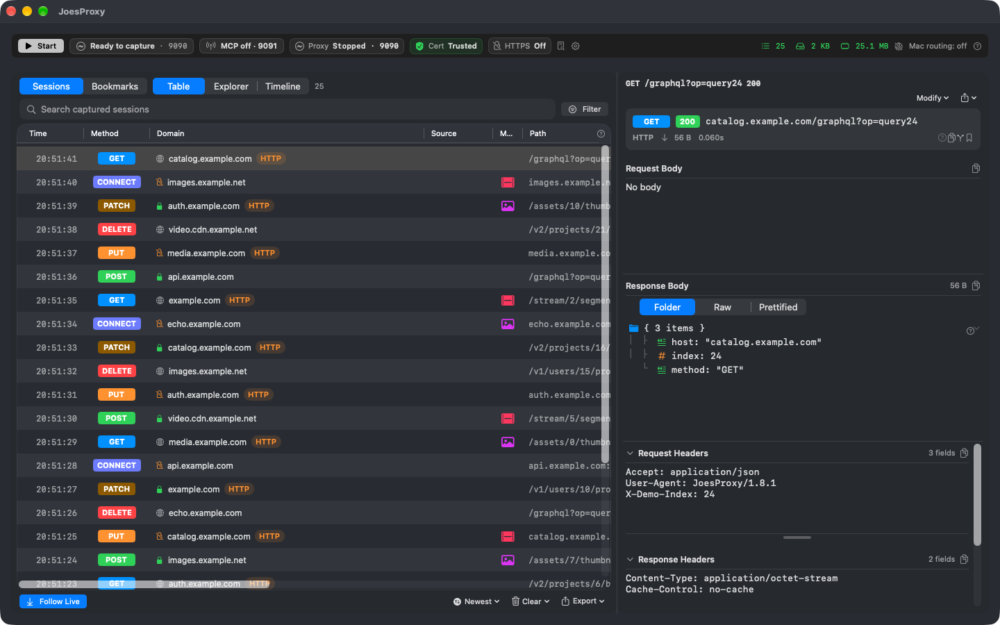
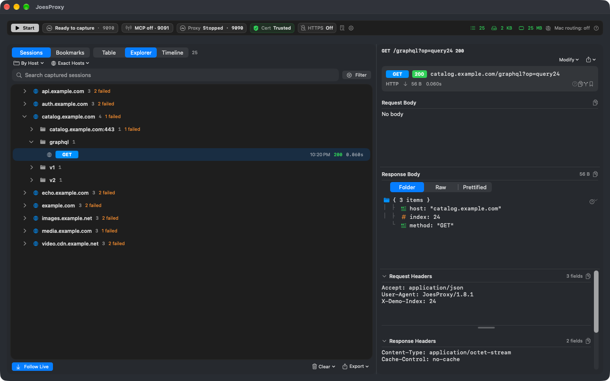

Inspect traffic. Test behavior. Work with an agent.
JoesProxy combines live HTTP/HTTPS capture, local traffic mutations, repeatable evidence, and supervised AI agent workflows in one native macOS workbench.
See each request in full context
Capture routed HTTP and eligible HTTPS traffic as it happens. Select a session to inspect its request, response, timing, source device, and inspection status.
- Live Session Stream: Chronological arrival list with Follow Live auto-scrolling.
- Three JSON Modes: Interactive Folder Tree, Prettified JSON, and Raw text.
- Source Attribution: Tagged automatically as Mac, iOS Simulator, iPhone, Apple TV, or Docker.
- Copy as cURL: Copy portable, sanitized cURL commands for terminal reproduction.


Group busy traffic and detect anomalies
Switch between Explorer view for structural hierarchy and Timeline view for temporal pattern recognition.
- Host & Endpoint Tree: Domain rollups with request counts and folder summaries.
- Timeline Lanes: Visual request sequencing, duration bars, and concurrency gaps.
- Automated Findings: Proactive callouts for buffering risks, retry storms, and clustered failures.
Reshape responses on the wire
Test client edge cases without redeploying backend services.
Map Local
Replace any upstream response with a local file, inline JSON draft, or an entire mock directory tree served as a mock API.
Block & Drop
Simulate server outages by returning synthetic error codes (404, 500, 503) or abruptly dropping TCP connections.
Map Remote
Forward matching traffic to alternate hosts, ports, or schemes while preserving, replacing, or rewriting destination paths.
Live Response Rewrites
Patch specific JSON fields in live responses in place without altering any other part of the upstream payload.
Network Throttling
Apply presets from 56k modem to flaky 3G, LTE, or custom bandwidth and latency simulation limits.
Cache Stripping
Strip cache headers globally or per-domain to force fresh upstream responses during active debugging.
Supervised AI Agent Diagnostics
JoesProxy includes a built-in Model Context Protocol (MCP) server on port 9091 for Claude Code, Cursor, and Codex.
- In-App Approvals: Every mutation or sensitive read waits for human confirmation.
- Durable Diagnostic Runs: Structured hypothesis → observation → conclusion → regression re-check lifecycle.
- Multi-Fault Scenarios: Compose multiple Map Local, Block, and throttling faults into an atomic test pass.
Screenshot omitted from this source snapshot: the earlier image has not been cleared for public distribution.
Autonomous Graph Diagnostics
Cutting-edge diagnostic engines built for multi-step reasoning and automated fault isolation.
Hypothesis DAG Bisection
Build multi-branch hypothesis trees; automatically prune disproven theories and bisect root causes across complex distributed flows.
LLM Stream Wire Inspector
Parse SSE token deltas, measure TTFT, throughput (tok/s), and inter-token jitter; detect canary prompt leakage and inject stream faults.
Async Race Fuzzing
Permute concurrent API arrival orderings using micro-delays to expose timing-dependent crashes and race conditions.
Resilience Optimizer
Mutate upstream JSON fields (nullify, omit, type-coerce) to locate minimal breaking points and recommend defensive Swift fixes.
Trajectory Diffing
Align two capture traces (working baseline vs broken nightly) to isolate the exact step and payload delta where execution diverged.
Semantic Wire Mocking
Intercept natural language search and chat queries, matching them against mock pools using zero-dependency local vector cosine similarity.
Screenshot omitted from this source snapshot: the earlier image has not been cleared for public distribution.
HLS Media & Device Guides
Deep inspection for streaming media protocols and guided setup wizards for all Apple and container platforms.
- HLS Manifest Inspection: Master playlist variants, audio/subtitle tracks, segments, and ad markers.
- Synthetic HLS Fixtures: Test player edge cases with encoded media fixtures missing codecs or inserting discontinuities.
- Guided Device Setup: Step-by-step trust wizards for macOS, iOS Simulator, physical iPhone/iPad, Apple TV, and Docker.